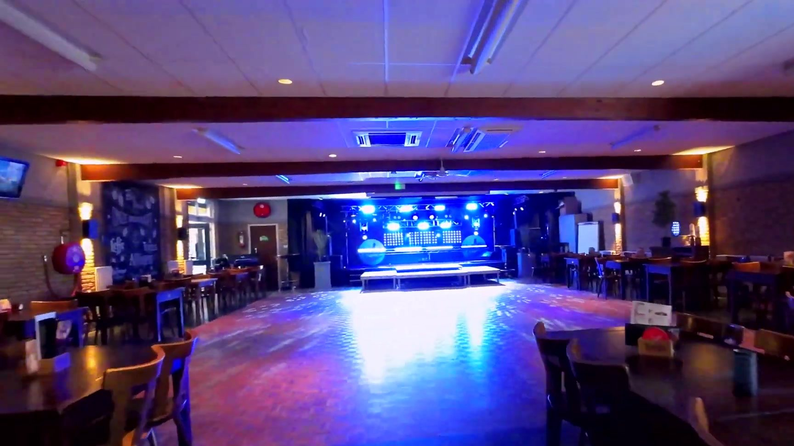
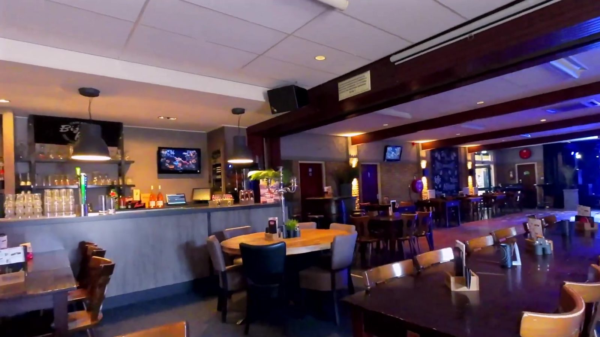
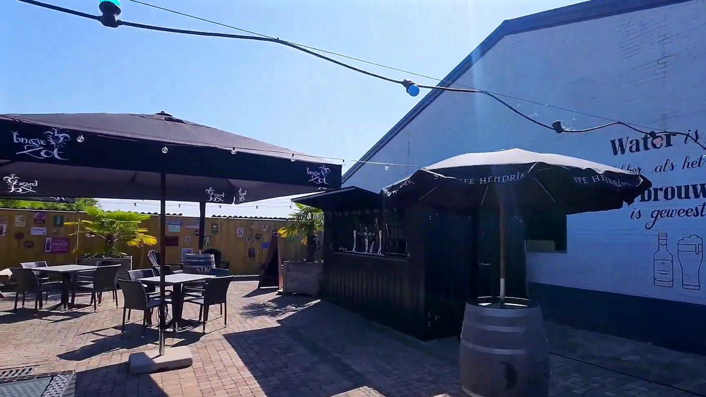
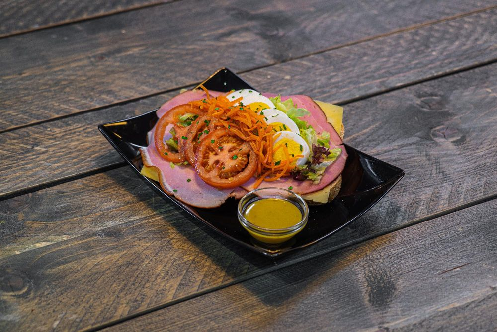
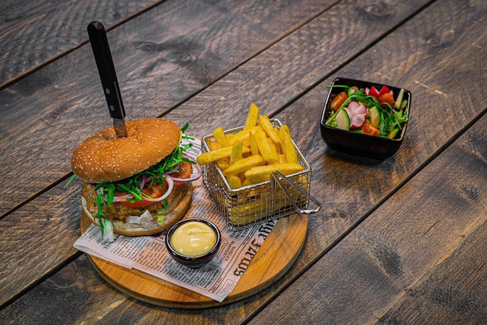
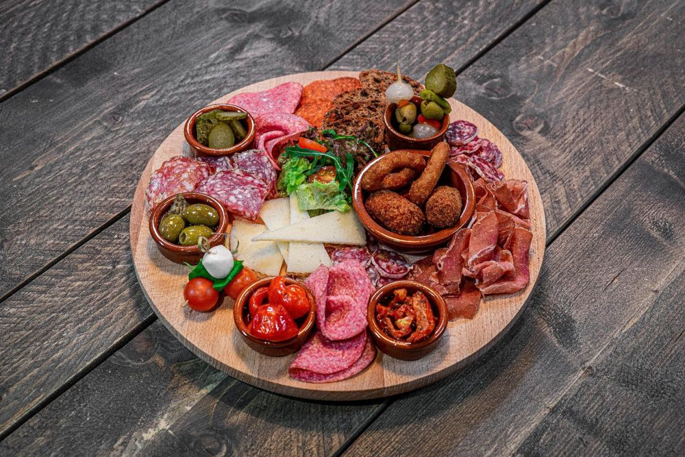
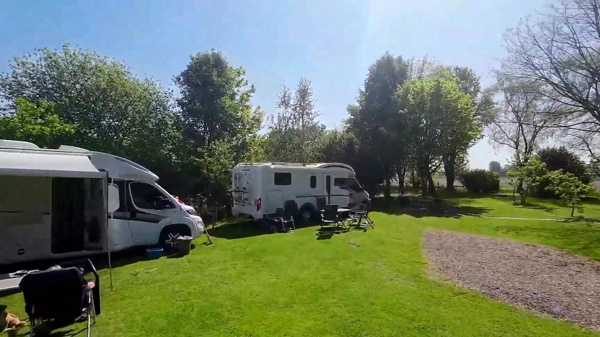
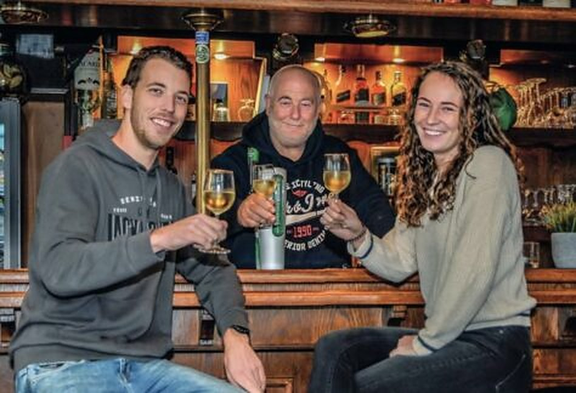

Horeca in de ruimste zin, al sinds 1883
Eetcafé, feestzaal en camperplaats in Kruisland. Voor een borrel, een diner of uw feest. Bij Koch voelt iedereen zich welkom.

Feesten en partijen
Uw huwelijksfeest, jubileum, verjaardag of vergadering: in onze zalen is ruimte voor elk moment. Ook voor een samenzijn na een uitvaart of een condoleance bieden we een passende, gastvrije omgeving.
We denken graag mee over de invulling, zodat alles aansluit bij uw wensen.
- Buffetten
- Koffietafels
- Hapjes en afsluiters
- BBQ
- Catering
- Vergaderingen

Eetcafé Bij Koch
Lekker eten, gezelligheid en persoonlijke aandacht. Kom voor een kop koffie met iets lekkers, een snelle hap, een lunch of een uitgebreid diner.
Neem plaats in het café, op het terras of in het eetcafé. Ongedwongen, gastvrij en met een goede prijs-kwaliteitverhouding.

Lunch
Een smakelijke lunch of een snelle hap tussendoor.

Diner
Uitgebreid tafelen met familie of vrienden.

Borrel
Gezellig borrelen aan de bar of op het terras.
Binnenkort bij Koch
Activiteiten in ons eetcafé. Reserveren kan telefonisch of via WhatsApp.
Onbeperkt spareribs
Blijven genieten van malse, smaakvolle spareribs, zoveel als je wilt.
Sinterklaasbrunch
Een uitgebreide brunch met warme en koude gerechten. En Sinterklaas en zijn Pieten komen gezellig langs.
Bierproeverij
Onze jaarlijkse bierproeverij is terug, dit jaar op twee avonden. Bijzondere speciaalbieren in Koch's bierkelder.

Camperplaats Dun Achtertuin
Een rustieke, groene plek achter Koch. Veel fiets- en wandelmogelijkheden in de buurt, en een uitstekende locatie voor geocaching. Het centrum ligt op 800 meter.
- Douche en toilet
- Wifi
- Water en lozen
- Wasmachine en droger

Gastvrijheid zit in ons DNA
"Zaal Koch, een vertrouwd adres sinds 1883, waar mensen samenkomen en herinneringen ontstaan."
Toine Koch, eigenaar
Koch is een familiebedrijf waar generaties elkaar opvolgen. Van een spontaan bezoek aan het café tot een feestelijke mijlpaal: we bieden ruimte aan allerlei momenten en gasten.
Met onze lange geschiedenis als basis blijven we bouwen aan de toekomst. Met plezier in ons vak en de overtuiging dat gastvrijheid begint bij je welkom voelen.
Reserveren
Een tafel in het eetcafé of een feest in de zaal? Laat weten wat u wilt, met hoeveel personen en op welke datum. We nemen snel contact met u op.